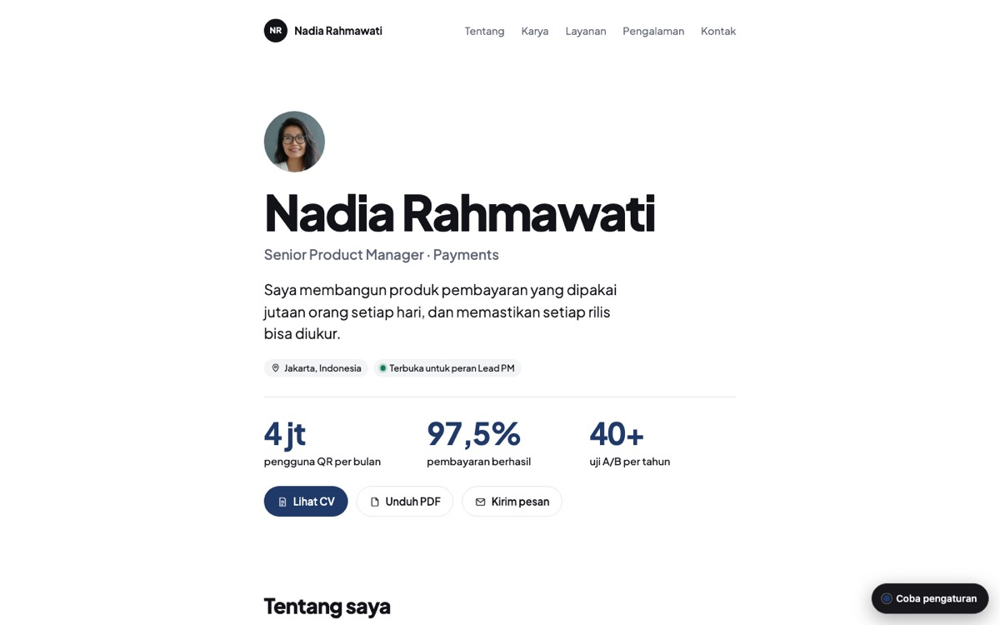
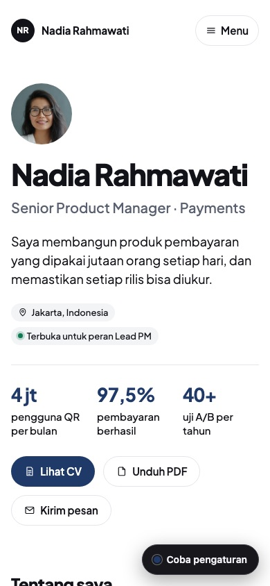

Lugas
GratisSemua bidang; tema bawaan
Satu kolom sempit, tipografi besar, banyak ruang putih. Karya tampil sebagai daftar dengan sampul kecil.
- Persona
- Nadia Rahmawati
- Mode bawaan
- Terang
- Efek bawaan
- Muncul halus
- Metrik bawaan
- Angka besar